| 日付 | 2015年9月12日（土） |
|---|---|
| 山域 | 富士山周辺 |
| メンバー | 家族（妻、長女・4歳、長男・2歳） |
| 山行形態 | 子連れ日帰り |
| アクセス | 車 |
| ルート (Map) | 富士宮口 (8:41) - (9:08) 雲海荘 - (9:29) 宝永火口 - (10:40) 宝永山 - (11:11) 宝永火口 (12:07) - (12:23) 富士宮口 |
富士山は1707年に大噴火を起こしている。
宝永大噴火と呼ばれるその噴火で富士山の中腹にできたのが宝永火口と宝永山だ。
現在では、その宝永山まで登山道が設けられている。
比較的容易に登れるらしいので、秋晴れの一日を選んで、行ってみることにする。
富士宮口の駐車場に到着。
9月になって富士登山期間は終わっているはずだが、
駐車場は一杯で出ていく車を少し待って駐車する。
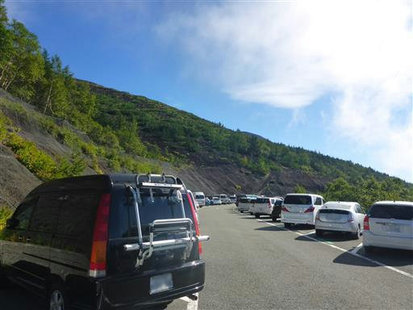
富士宮口から登山開始。最初は富士登山と同じ道を辿る。
学生時代に富士山に登った時はここから登っていて、この場所に来るのは14年振りだ。
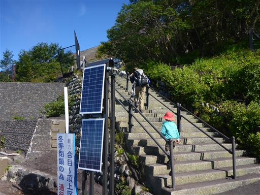
標高は2400m。富士山の数ある登山口の中で最も高い位置にある。
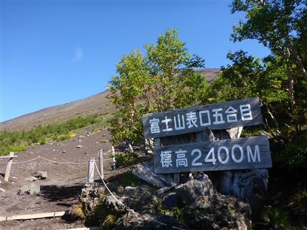
富士山の山頂まで見えている。
下界からは少し富士山に雲がかかっているように見えたが、ここはすでに雲の上で上空は快晴だ。
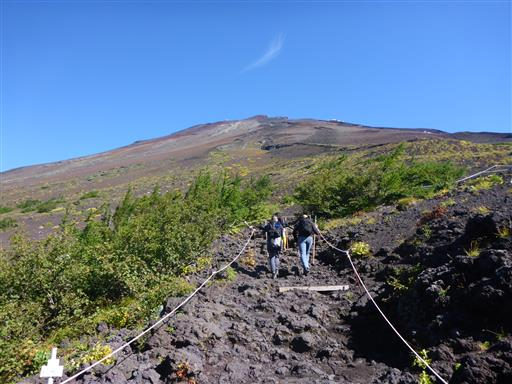
息子は最初歩いて登っていたが、案外歩きにくい道ですぐにキャリアに乗せてと言っている。
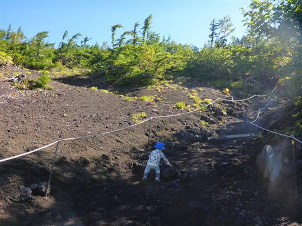
疎らに木が生えている。ちょうどこの辺りが森林限界だ。
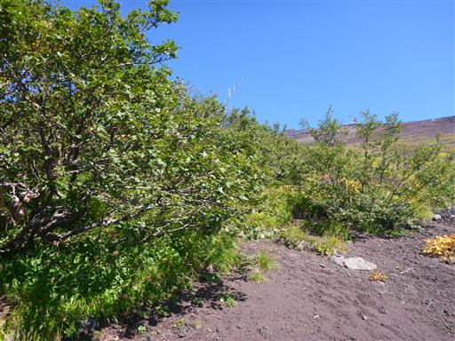
登山道のすぐ下にブルドーザーの道が見える。
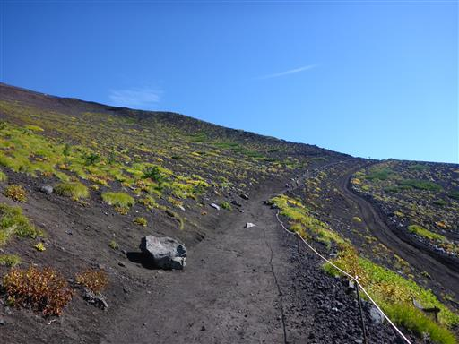
6合目の雲海荘に到着する。
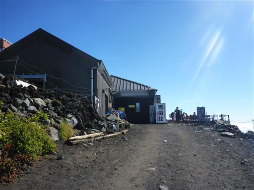
名前の通り、下界には雲海が広がっている。
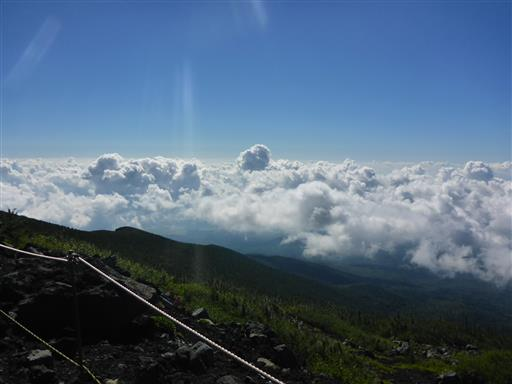
多くの山小屋が店を閉めている季節だが、この山小屋はまだ営業中だ。
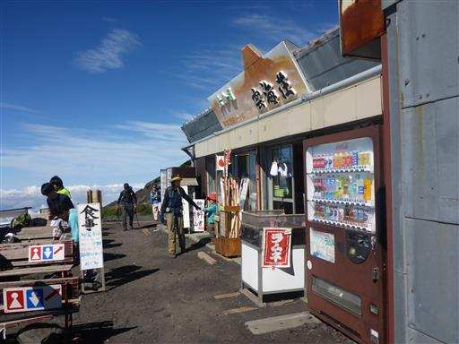
山頂に続く道と分かれる。宝永山の頭が少しだけ見えている。
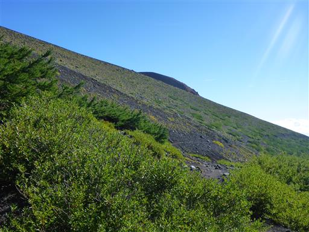
ここから噴火口まで登りはない。
富士山の広大な斜面につけられたトラバース道を歩いていく。
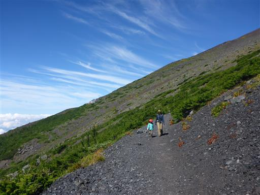
足元に赤い実がなっている。
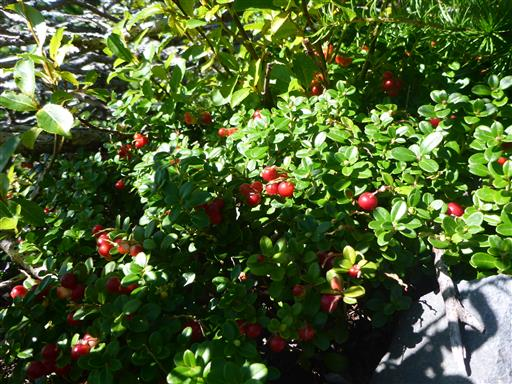
斜面にへばりつく木。この辺りは非常に厳しい環境だ。
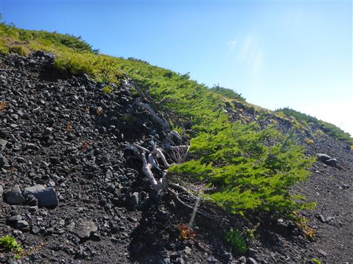
噴火口の一角に到着する。
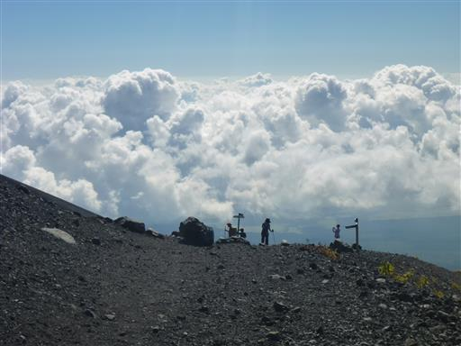
宝永火口と宝永山が間近に見える。
山の形、土の色など、これまでに見たことのない異様な光景だ。
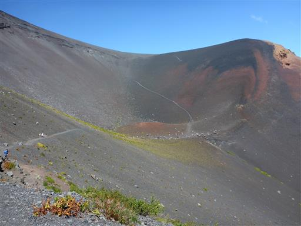
火口に向かって下っていく。
富士山頂の噴火口に下る道は存在しないが、こちらの火口には下ることができる。
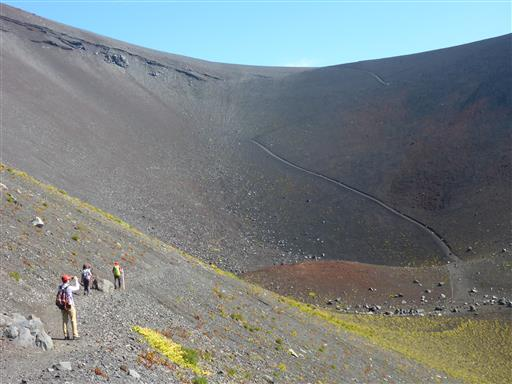
フジアザミの大きな花が咲いている。
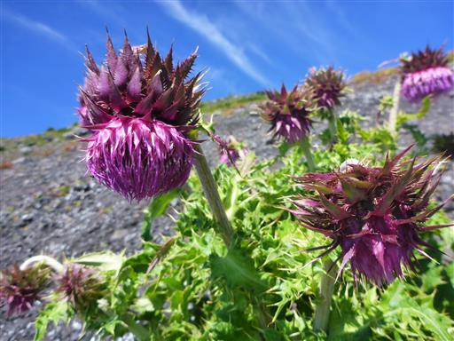
宝永火口の底に到着。
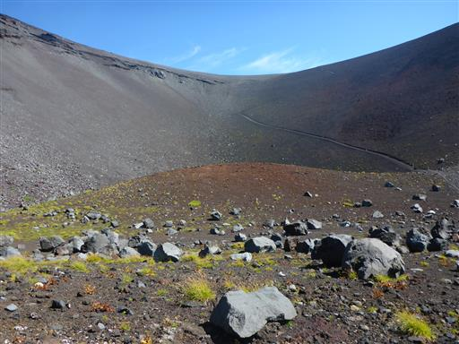
ここから火口の縁まで長い斜面を登る。
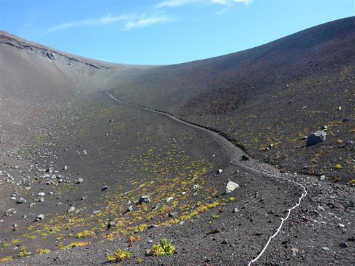
道は深い砂に覆われていて極めて歩きにくい。
山と高原地図では登り60分、下り25分で、倍以上の差がつけられている。
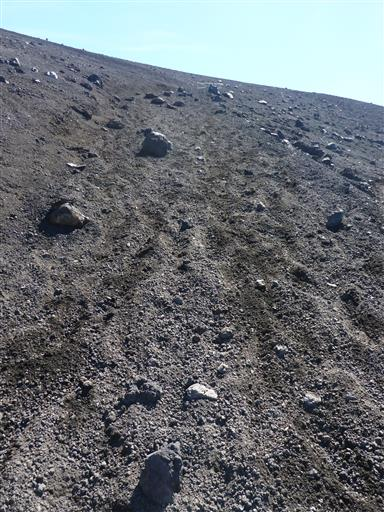
娘は歩きにくい道に音を上げている。
「何でこの山にしたの？」を連呼している。
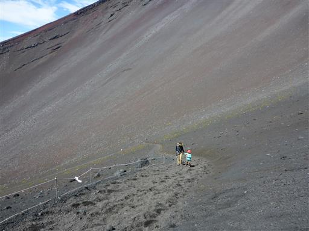
登って行くと富士山の全体像が見えてくる。
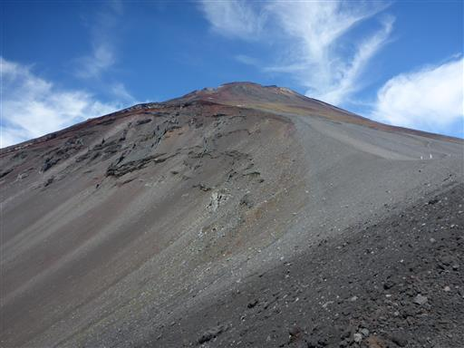
大きな噴火口を見下ろす。背景の雲が美しい。
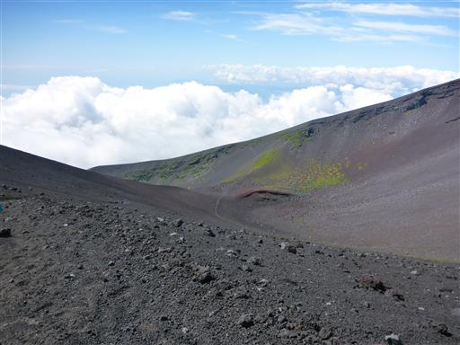
火口の縁に到着。ここは富士山頂に続く登山道と宝永山への道との分岐点だ。
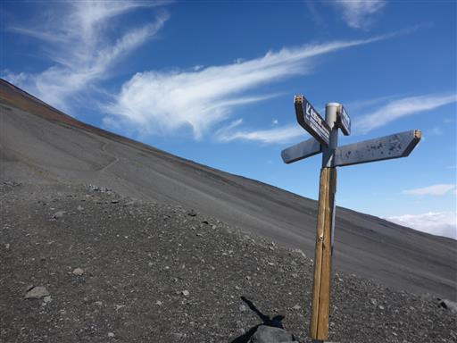
噴火口の上部には溶岩の通り道だった岩脈が見られる。
血管のようで少し気持ち悪い。
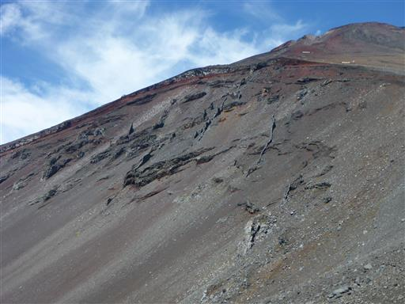
斜面に雲が張り付いている。幸い雲はここまで上がってくる気配はない。
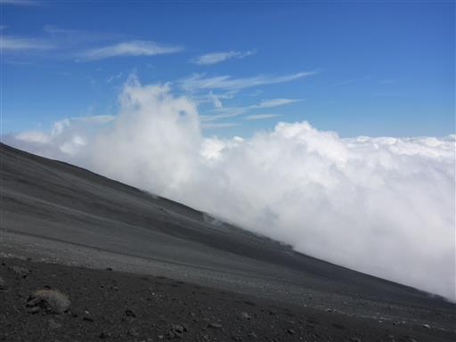
ここから宝永山の山頂までは平坦な道。しかし風が非常に強い。
砂の次は風で、娘はやはりグズグズだ。
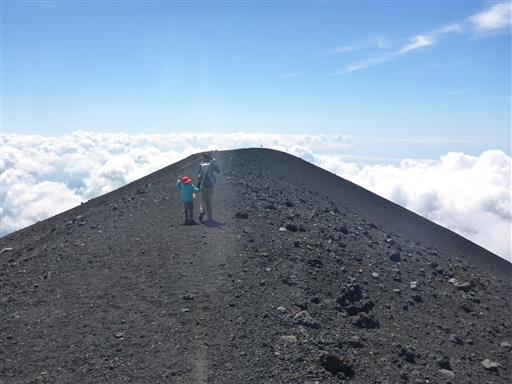
宝永山に到着する。標高2693m。
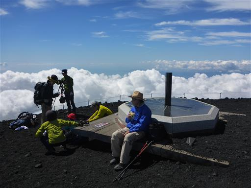
目の前に広がる展望はもちろん富士山。
間近で見る富士山は、ものすごい迫力だ。
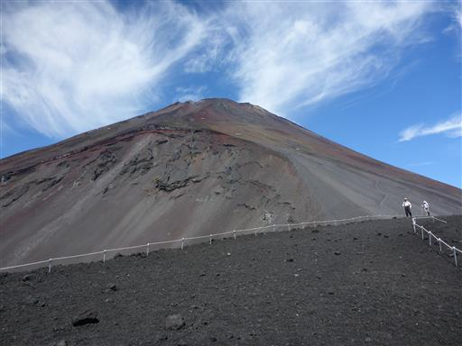
それ以外の景色はどこを見ても雲海が広がっている。
上から丹沢などの山並みを眺めてみたかったので、少し残念だ。
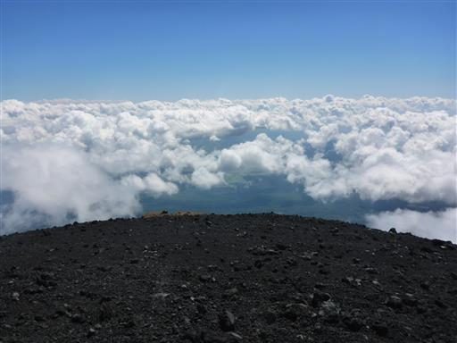
雲の切れ目から側火山である二ッ塚が見えている。
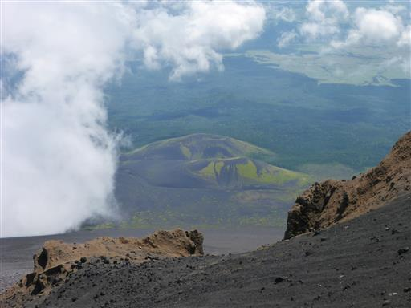
風が強いので写真を撮ったら即、下山を開始する。
下りは薄い踏み跡のショートカット道を選択。
目の前の富士山は本当に大きい。巨大な砂の塊だ。
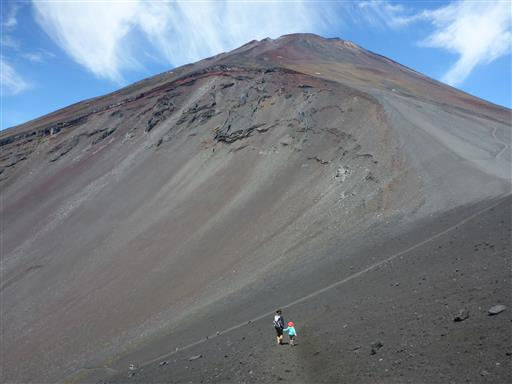
砂走りのような道なので、登りでは苦しんだが下りは非常にスピードが出る。
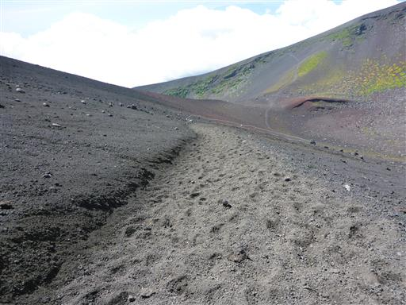
宝永噴火口の底まで下りてくる。ここまで下ると風はだいぶ弱まる。
この広場は登山者の憩いの場になっている。
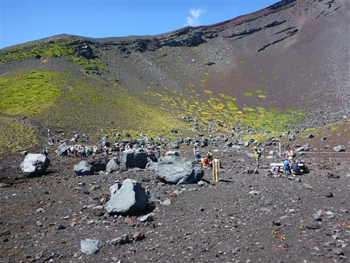
山頂で昼食をとれなかったため、ここのテーブルで昼食をとる。
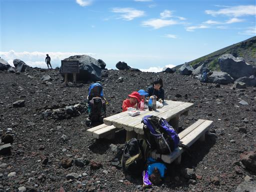
娘は付近に転がっている岩に登って遊んでいる。
大人には簡単だが、体が小さな娘には手頃な岩が多数あり、次々と登っている。
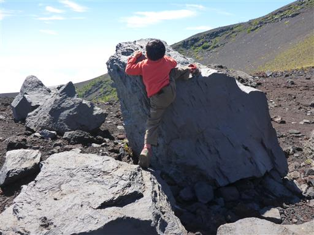
家族みんなで岩登り。
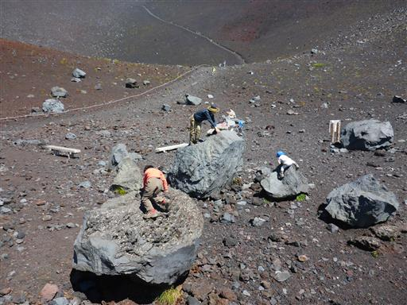
この辺りは小さな石が敷き詰められている。
成因はよく知らないが、非常に軽い石だ。
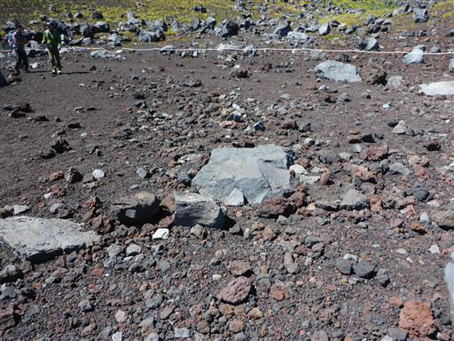
光沢があるきれいなカメムシが歩いている。
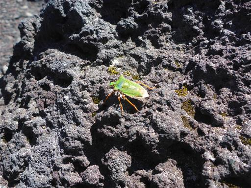
ここから帰りは少しコースを変えて火口縁をしばらく下る。

小石が堆積した傾斜の強い道で、慎重に下っていく。
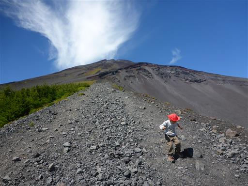
下に見えるのが宝永第二火口。宝永火口は全部で3つの火口が並んで存在する。
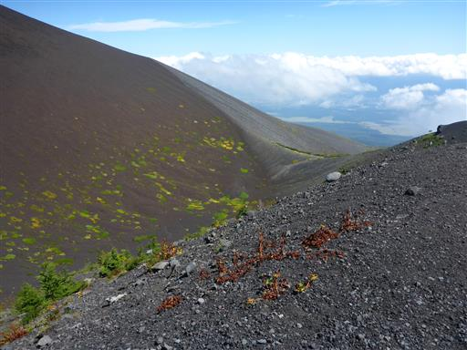
一番大きな第一火口を下から見上げる。富士山も巨大だが、宝永火口もまた巨大だ。
火口の大きさは富士山頂の火口よりも大きい。
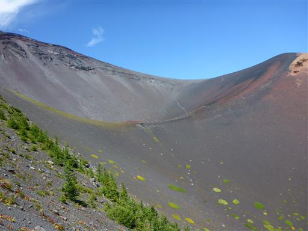
しばらく下ったら折り返して、水平の道を駐車場まで歩いていく。
ここからは樹林帯の中の道になり、風景が一変する。
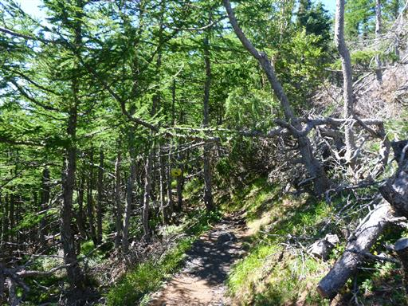
こんなところにも熊が生息しているらしい。
娘はシルエットのみで熊と判別していた。
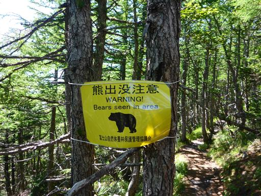
タデ科の植物だろうか？花が咲いている。
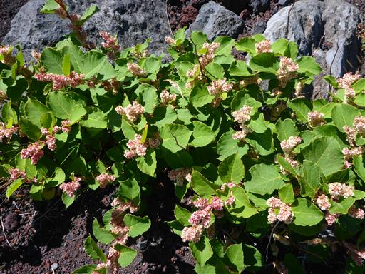
樹林帯を抜けて駐車場に到着する。
こちらの登山口には標識が無く、少々不親切だ。
思った以上に雄大な眺望が得られた宝永登山だった。
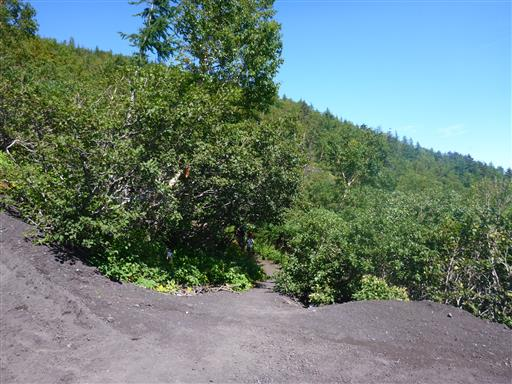